Liebe Oma Hilde
und ich werde bleiben im Hause des Herrn immerdar"
- Psalm 23
Oma Hildes Rezepte & Co.
Liebevoll zusammengestellt von ihrer Enkelin
Das originale Rezeptbuch mit allen Geschichten und Rezepten zum Durchblättern und Aufbewahren
Grußwort
Kochen ist mehr als nur das Zubereiten von Speisen – es ist Erinnerung, Gemeinschaft und ein Stück zuhause.
Mit jedem Rezept in diesem Buch lebt ein kleiner Teil unserer Geschichte weiter: Die besonderen Anlässe, zu denen Oma Hilde eingeladen hat – Geburtstage, Weihnachten, der Duft von frisch gebackenem Zwiebelkuchen oder warmen Butterbrezeln an den Adventssonntagen.
Dieses Buch ist eine Sammlung von Herzstücken.
Von Gerichten, die Generationen verbinden. Von Momenten, die nach Butter, Liebe und Kindheit schmecken.
Zugleich ist es ein Gedenken an zwei Menschen, die unser Leben geprägt haben: Oma Hilde und Opa Karl.
Möge dieses Buch inspirieren, verbinden und bewahren – für heute und für morgen.
Mit viel Liebe – und einer Prise Dankbarkeit.
Biografie von Hilda Maria Wartmann (geb. Neuscheler)
Geburt und Kindheit
Hilda Maria Wartmann, geborene Neuscheler, wurde am 6. Juni 1932 in Altenriet geboren. Sie wuchs mit ihrer drei Jahre jüngeren Schwester Gisela auf einem kleinen Bauernhof auf. In der kleinen Landwirtschaft war jede helfende Hand gefragt – Hilde lernte früh, Verantwortung zu übernehmen.
Schule und Jugendzeit
Hilde besuchte acht Jahre lang die Volksschule unter anderem bei Lehrer Blaschek. Danach wollte ihre Mutter sie gleich in der elterlichen Landwirtschaft einsetzen – eine Entscheidung, die Hilde zunächst schwerfiel. Trotzdem arbeitete sie mit Pflichtbewusstsein auf dem Hof mit.
In den Jahren nach dem Zweiten Weltkrieg konnte sie eine hauswirtschaftliche Ausbildung absolvieren. In Metzingen lernte sie das Nähen, in Reutlingen, wie eine gute Hausfrau den Alltag meistert.
Heirat, Familie und Landwirtschaft
In Karl Wartmann aus Mittelstadt fand Hilde die Liebe ihres Lebens. Die beiden heirateten und zogen in einer kleinen Wohnung unter dem Dach, in dem sie gemeinsam mit ihren Kindern lebten. Sie lebten auch mit den Großeltern, Emil Neuscheler und Wilhelmine Neuscheler, zusammen in einer Wohnung ohne Bad. Es war eng, aber voller Leben: Ihre Söhne wurden dort aufgezogen.
Neben der Kindererziehung arbeitete Hilde auch außerhalb des Hauses – unter anderem in der Milchannahmestelle. Später wechselte sie zum Bekleidungshaus Adler bei Herrn Wiesner und arbeitete dort in der Nähabteilung.
Haus
Mit dem Wechsel von Karl zum Arbeitgeber Daimler wurde ein lang gehegter Traum möglich: der Bau eines eigenen Hauses in der Kelterstraße 2 in 72657 Altenriet.
Kochleidenschaft und Alltag
Hilde war eine leidenschaftliche Köchin. Ihre Schneckanudla, Zwiebelkuchen, Spätzle und Linsen mit Saitenwürstle sind in der ganzen Familie legendär – nicht zu vergessen die Schwarzwälder Kirschtorte.
Gemeinschaft und Glaube
Hilde engagierte sich über viele Jahre im Kirchenchor und im Kirchengemeinderat. Sie übernahm Verantwortung und war bekannt für ihre Zuverlässigkeit.
Späte Jahre
Als die Kinder aus dem Haus waren, begann für Hilde und Karl eine neue Zeit – mit Reisen unter anderem nach London, Moskau, in die USA und Ägypten zu den Pyramiden, sowie Israel. Die beiden blieben ein eingespieltes Team – auch als Karl gesundheitlich auf ihre Hilfe angewiesen war. Gemeinsam feierten sie ihre goldene und sogar diamantene Hochzeit, sechzig Jahre Ehe und Partnerschaft.
Vermächtnis
Hilde war Mutter von drei Söhnen, Großmutter von sechs Enkeln und Urgroßmutter von bald acht Urenkeln. Sie war Mittelpunkt vieler Familienfeste – mit offenem Herzen, gutem Essen.
Dieses Rezeptbuch ist ein liebevolles Andenken an ihr Leben und ihre Küche. Es bewahrt nicht nur Gerichte, sondern auch Erinnerungen, die Generationen verbinden.
Familiengeschichte
Die Eltern: Emil und Wilhelmine Neuscheler
Hilde wuchs als Tochter von Emil und Wilhelmine Neuscheler auf einem kleinen Bauernhof in Altenriet auf. Ihre Eltern prägten sie durch ihre Arbeitsethik und ihre Liebe zur Familie.
Heimat Altenriet
Kostbare Familienerinnerungen

Lieder und Traditionen
Auf der grünen Wiese
Hinweis: Dieses Lied hat Oma Hilde gern gesungen, wenn ihre Enkel bei ihr übernachtet haben und sie diese ins Bett gebracht haben.
„Auf der grünen Wiese stand die kleine Lise,
eine klitzekleine Maus nahm sie mit nach Hause.
Doch die Mutter freut sich nicht,
macht ein ängstliches Gesicht,
wirft die klitzekleine Maus wieder aus dem Haus.
Ach, wie war das Mäuslein froh,
quietschvergnügt und tanzte froh,
huschte schließlich klitzeklein ins Mauseloch hinein."
Oma Hildes berühmte Rezepte
Teil II des Buches widmet sich den klassischen Mittagessen, wie sie Oma Hilde jahrzehntelang für ihre Familie gekocht hat.
Neben den aufgeführten Rezepten gab es bei ihr auch regelmäßig Gulasch, Grießbrei oder Nudelauflauf, Suppen und weitere Gerichte. Ein Salat durfte nie fehlen. Fast immer kam er aus dem eigenen Garten: Tomaten, Gurken, Kartoffeln – alles selbst angebaut und frisch zubereitet.
Die sizilianischen Makkaroni mit Sardinen, Paprika und Oliven hat Oma Hilde in einer Kochsendung entdeckt und gerne zubereitet – auch wenn Opa Karl sie weniger mochte.
Diese Gerichte tragen den Geschmack von Kindheit – und die Erinnerung.
Schwäbische Klassiker
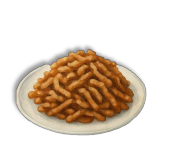 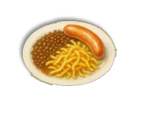 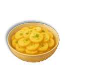 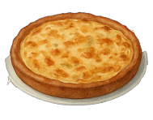Herzhafte Gerichte
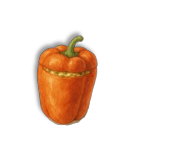 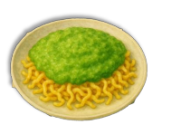 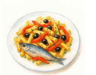 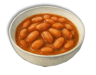Gebackene Köstlichkeiten
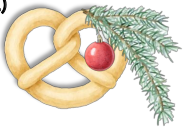 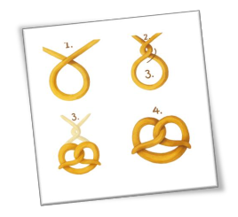 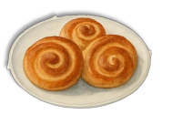 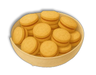Süße Erinnerungen
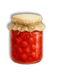 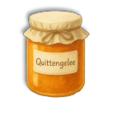Unsere Dankbarkeit
- Danke für deine unendliche Liebe, die uns ein Leben lang begleitet hat
- Danke, dass du immer für uns da warst – mit einem offenen Ohr, einem warmen Herzen und starken Armen
- Danke für deine Großzügigkeit und dein gutes Herz
- Danke für die endlosen Geschichten, die du uns erzählt hast und die Geborgenheit, die wir bei dir fanden. Unsere Kindheit war voller Lachen und Wärme
- Danke für die wundervollen Erinnerungen, die wir alle an dich haben
- Danke, dass wir dich bis zum letzten Moment begleiten durften – so wie du uns ein Leben lang begleitet hast
Wir lassen dich in Liebe gehen – in unseren Herzen bleibst du für immer.
Jetzt bist du wieder mit deinem Karl zusammen.
In Gedenken an Oma Hilde – ein kleiner Trost
Warum wir nur durch die Zeit gehen können
- für Oma Hilde
Stell dir vor, das Leben ist wie eine große Landkarte. Auf dieser Karte ist jeder Moment – vom ersten Atemzug bis zum letzten Lächeln – bereits eingezeichnet. Alle Augenblicke existieren gleichzeitig, wie Orte auf einer Karte.
Die Physik nennt das das Blockuniversum. In ihm sind Vergangenheit, Gegenwart und Zukunft nicht getrennt – sie sind einfach nur verschiedene Koordinaten im Raum-Zeit-Gewebe. So wie alle Orte gleichzeitig auf einer Karte da sind, ist auch jedes „Wann" immer da.
Doch unser Bewusstsein ist wie ein Lichtstrahl, der diese Karte Stück für Stück beleuchtet. Wir erleben Zeit, weil unser Geist sich durch sie hindurchbewegt – wie ein Wanderer auf einem Weg, der immer nur vorwärts geht.
Warum vorwärts? Weil die Ordnung der Dinge – wie ein zerbrochenes Glas, das nicht wieder ganz wird – nur in eine Richtung wächst. Die Natur erlaubt uns keine Rückkehr, sondern schenkt uns nur die Bewegung nach vorn.
Oma Hilde ist nicht „weg". Ihr Ort auf dieser großen Karte bleibt – voller Duft von Schneckennudeln, Lachen in der Küche, warmer Hände. Wir können ihn nicht mehr besuchen, aber er ist da.
Und wer weiß: Vielleicht ist ihr Licht nun einfach ein Stück weiter vorne – an einem anderen, stillen Ort auf dieser großen Landkarte des Seins.
In Liebe und Dankbarkeit
Ihre Söhne mit deren Partnern
Ihre sechs Enkel
Ihre sieben Urenkel
Juni 2025